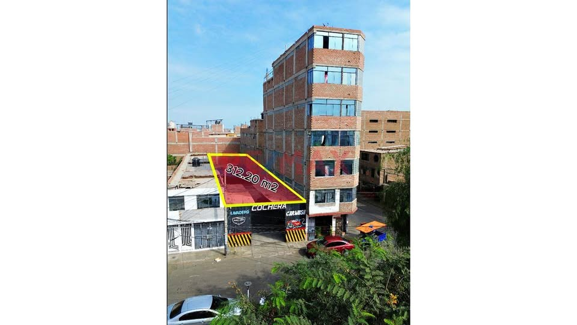

PEN250,000 312 m²

🏡 ¡TERRENO EN VENTA – URB. SANTA MARÍA, TRUJILLO! 📐 312 m² 📍 Calle Chimú Cápac 250 – Urb. Santa María 🏊♂️ Cerca a la Piscina Gildemeister ✨ Excelente ubicación y gran potencial de inversión ✅ Inscrito en SUNARP ✅ Documentación en regla ✅ Listo para transferencia 📏 Frente: 7.70 ml | Fondo: 39.75 ml 🚗 Acceso rápido al Centro Histórico y a las avenidas América Sur, González Prada y Moche. 🛍️ Cerca de supermercados, bancos, restaurantes, centros médicos y comercios. 🏗️ Ideal para constructores, inversionistas o familias que buscan construir en una zona tranquila y estratégica. 📲 ¡Solicit